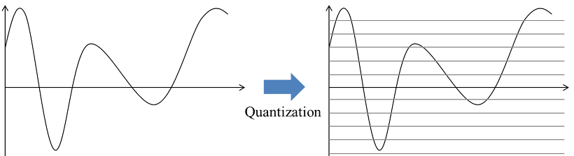
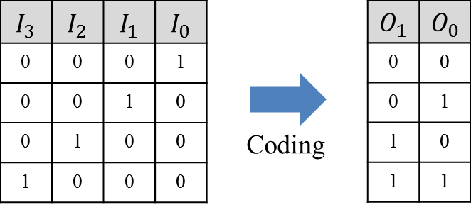
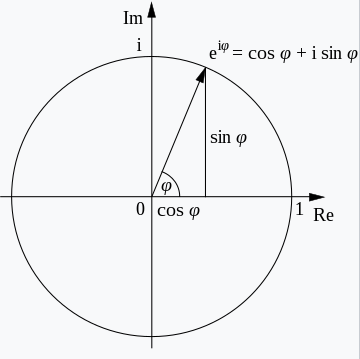
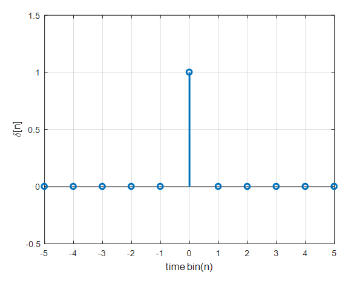
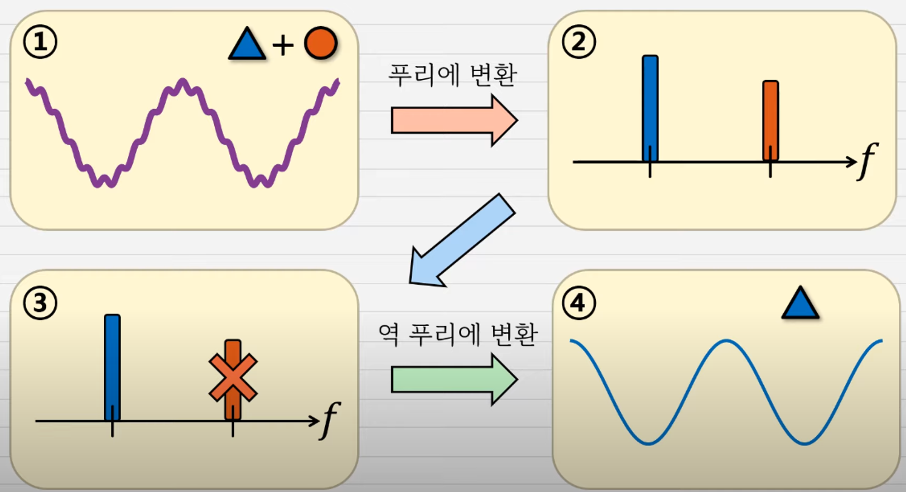

샘플링(sampling): 메시지 신호를 특정 순간에서 그 진폭을 나타내는 일련의 수로 변환
양자화(quantization): 샘플링에 의해 생성된 각각의 수를 유한 개의 이산 진폭 레벨 가운데 가장 가까운 레벨로 표현. 예를 들어 16비트 이진수로 나타내면, 각 샘플을 216개의 레벨로 표현할 수 있다. 메시지 신호가 샘플링과 양자화 과정을 모두 거치면, 시간축과 진폭출 모두 이산적으로 표현된다. 
코딩(coding): 양자화된 샘플을 유한 개의 심벌로 이루어진 코드 워드(code word)로 표현. 예를 들면, 이진 코드의 경우 심벌은 ‘1’ 또는 ‘0’ 이다. 
샘플링, 코딩과는 달리 양자화는 역변환이 가능하지 않다.
즉, 양자화를 하게 되면 응용에 있어 항상 정보의 손실이 발생
만일 디지털 컴퓨터의 경우와 같이 원래의 정보가 처음부터 이산적이라면, 위에 언급된 진행 과정은 모두 필요 없게 된다.
input signal \(\rightarrow\) system \(\rightarrow\) output signal
오일러 공식
- \(e^{j\theta}=cos\theta+jsin\theta\)

복소평면에 나타내면 다음과 같음. 길이가 1인 막대기
\(2e^{j\theta}\)라면? 길이가 2인 막대기. (길이가 2배 늘어남)
\(A\times e^{j\theta}\) 와 같은 지수함수의 형태로 모든 수를 나타낼 수 있다.
- 오일러 공식 예제 - 크기와 각도 구하기
\(1+e^{j5t}\)를 지수형식으로 나타내라.
\(1+e^{j5t}=1+cos(5t)+jsin(5t)\)
여기서 \(1+cos(5t)\)가 실수부, \(jsin(5t)\)가 허수부
\(Ae^{j\theta}\) 꼴로 나타내야 하므로 크기와 각도를 구하면 된다.
크기: \(A=\sqrt{(1+cos(5t))^2+sin^2(5t)}\)
각도: \(\theta={tan}^{-1}(\frac{sin(5t)}{1+cos(5t)})\)
\(\Rightarrow\) \(A=\sqrt{(1+cos(5t))^2+sin^2(5t)}e^{jtan^{-1}(\frac{sin(5t)}{1+cos(5t)})}\)
Causal
입력이 있고나서 출력이 나오면 causal.
출력이 입력보다 먼저 나오면 non-causal
- 예제
\(y(t)=x(3t)\)
t=1일 때 \(y(1)=x(3)\), 1초의 입장에서 3초는 미래다. 3초때의 입력이 1초에 나오므로 causal이 아니다.
\(y(t)=x(t)cos(t+1)\)
t=1일 때 \(y(1)=x(1)cos(2)\), 1초에 2초의 코사인이 쓰였으므로 non-causal이다? (X)
\(cos(2)\)는 그냥 값일 뿐. x만 봤을 때 1초의 입력값이 1초에 나왔으므로 causal이 맞다.
\(y(t)=x(-t)\)
이것저것 넣어보면 된다.
t=1일 때 \(y(1)=x(-1)\)
t=-1일 때 \(y(-1)=x(1)\): -1초 입장에서는 1초는 미래. non-causal!
LTI System
- LTI (Linear Time Invariant)
Linear = Scaling + Additivity = superposition
\(\alpha x_1(t)+\beta x_2(t)\)를 시스템에 넣었을 때 \(\alpha y_1(t)+\beta y_2(t)\)가 나오면 Linear system
Time Invariant
x가 time shift가 됐을 때, y도 time shift가 돼야 함.
\(x(t)\rightarrow y(t),\quad x(t-t_0)\rightarrow y(t-t_0)\)
\(y=x(-2t+2)\)는 TI인가?
x의 \(t_0\) shift: \(x(-2t+2-t_0)\)
y의 \(t_0\) shift: \(y(t-t_0)=x(-2(t-t_0)+2)=x(-2t+2-2t_0)\)
둘이 값이 다르므로 TI가 아니다.
왜 LTI System을 다루는가?:
예측 가능성, 수학적 단순성, 푸리에 변환과 라플라스 변환의 적용 가능, 안정성과 응답 특성 분석, 중첩 원리 적용 등…
Convolution
\(y(t)=f(x(t),h(t))\) 여기서 \(h(t)\)는 impulse response!
\(h(t)\)가 뭐냐?
\(x_1(t)\rightarrow\square\rightarrow y_1(t)\) 이러한 시스템에서
특별히 \(x_1(t)=\delta(t)\)일 때의 출력값 \(y_1(t)=h(t)\)라고 표기한다.
\(\delta[n]= \begin{cases} 1,\quad n=0\\ 0,\quad otherwise \end{cases}\)

\(y(t)=f(x(t),h(t))\leftarrow\) (여기서 f가 컨볼루션)
\(h(t)\)를 안다는 것은 피아노 한 건반(delta function)을 쳤을 때를 안다는 것
이것을 알면 오케스트라 전체(임의의 입력)가 연주할 때도 알 수 있다. predictable
convolution = calculation of accumulated reaction
\(y[n] = \sum^{\infty}_{-\infty}x[k]h[n-k]=x[n]*h[n]\)
\((y[n]=...+x[-1]\delta[n+1]+x[0]\delta[n]+x[1]\delta[n-1]+...)\)
여기서 \(\sum^{\infty}_{-\infty}\)가 additivity, \(x[k]\)가 scaling, \(h[n-k]\)에서 \(-k\)가 time invariant
컨볼루션은 LTI 그 자체
연속시간 컨볼루션 (CT Convolution)
\(x(t)=\int^{\infty}_{-\infty}x(\tau)\delta(t-\tau)d\tau\)
\(y(t)=\int^{\infty}_{-\infty}x(\tau)h(t-\tau)d\tau=f(x(t),h(t))=x(t)*h(t)\)
- 오직 LTI 시스템에서만 이렇게 나타낼 수 있다. Scaling / Additivity / Time Invariant
Impulse response
- \(h(t)\)를 안다는 건 그 시스템을 안다는 것
output? \(\rightarrow\) \(y(t)\)를 컨볼루션으로 계산해냈다.
memoryless? 입력이 들어간 순간만 반응 (\(t=0\)에만 값이 있어야함)
causal? 과거 혹은 현재의 입력에만 영향을 받는다. (\(t\ge 0\)에 값이 있어야 함. t보다 큰 부분에 있는 경우는 이전의 입력이 현재에 영향을 주는 상황)
stable? Bounded Input이 들어갔다고 했을 때 Bounded Output이 나오면 BIBO Stable
BIBO \(\leftrightarrow \int^{\infty}_{-\infty}|h(t)|dt<\infty\) 동치
기본 주파수(fundamental frequency)
fundamental period의 역수
어떤 \(T>0,\quad x(t+T) \quad\forall t\) \(\quad\) 주기 T
가장 작은 주기가 fundamental period (예를 들어 코사인 함수는 \(2\pi\), \(4\pi\) 다 주기가 되지만 가장 작은 \(2\pi\)가 fundamental period)
푸리에 급수
Fourier series: Approximation for a periodic signal
periodic signal is composed of sinusoids.
\(x_{T_0}(t)=...+a_{-2}e^{j(-2)w_0t}+a_{-1}e^{j(-1)w_0t}+a_0+a_1e^{jw_0t}+...\)
모든 주기 신호를 다 표현 가능한가? → 전부는 아니지만 생각할만한 건 다 표현가능
\(T_0\)가 주어진다면 일대일 대응, 주어지지 않는다면 X
\(e^{jkw_0t}\)는 벡터다
푸리에 시리즈를 배우는 이유? 각각 다른 주파수를 이용해 신호를 보내는데
(필터를 써서?) 필요한 신호만 남기고 나머지를 죽임

푸리에 변환
- Fourier Transform(FT)
시간 도메인에서 정의된 신호를 주파수 도메인으로 변환하는 과정
\(X(w)=\int^{\infty}_{-\infty}x(t)e^{-jwt}dt\)
- Inverse Fourier Transform(IFT)
주파수 도메인에서 정의된 신호를 다시 시간 도메인으로 변환하는 과정
\(x(t)=\frac{1}{2\pi}\int^{\infty}_{-\infty}X(w)e^{jwt}dw\)
\(x(t)\Leftrightarrow X(w)\) 서로 변환 가능!
푸리에 변환표
\(\delta(t) \Leftrightarrow 1\)
\(x(t)*h(t)\Leftrightarrow X(w)H(w)\)
Duality, \(X(t)\Leftrightarrow 2\pi x(-w)\)
다양한 변환이 있으나 생략
Parseval의 정리
- \(\int^{\infty}_{-\infty}|x(t)|^2dt=\frac{1}{2\pi}\int^{\infty}_{-\infty}|X(w)|^2dw\)
이산시간 푸리에 급수 (DTFS)
연속시간: \(x_{T_0}(t)=\sum^{\infty}_{k=-\infty}a_ke^{jkw_0t}\)
이산시간: \(x_N[n]=\sum_{k=<N>}a_ke^{jk\frac{2\pi}{N}n}\),
\(k=<N>:\)연속된 N개의 정수를 골라라 / \(W_N=e^{-j(\frac{2\pi}{N})}\)으로 쓰기도 함
이산시간 푸리에 변환(DTFT)
DTFT: \(X(\Omega)=\sum^{\infty}_{n=-\infty}x[n]e^{-j\Omega n},\Omega = k\frac{2\pi}{N}\)
IDTFT: \(x[n]=\frac{1}{2\pi}\int_2\pi X(\Omega)e^{j\Omega n}d\Omega\)
DTFT는 주기성을 가짐. \(X(\Omega)=X(\Omega +2\pi)\)
이산 푸리에 변환 (DFT)
CTFT C \(\Leftrightarrow\) C \((X(w))\)
DTFT D \(\Leftrightarrow\) C \((X(\Omega))\)
DFT D \(\Leftrightarrow\) D
DFT의 정의: \(0\) ~ \(N-1\) 까지 값을 가지는 \(x[n]\) 을 DTFT한 다음 \(\frac{2\pi}{N}\) 간격으로 (\(\frac{2\pi}{N}k, k=0,...,N-1)\) 샘플링
아무 시작점에서 N개를 고르는 것이 아닌 무조건 0부터 N-1 까지다.
Z Transform
DTFT를 확장
ROC: sum이 수렴하도록 하는 z의 range of value, 원처럼 생김
poll: 발산하게 하거나 \(\frac{1}{0}\)
zero: 0이 되도록 하거나 0으로 수렴하게끔 하는 값
디리클레 조건
시스템 해석, IIR, FIR필터 설계
미니멈 페이즈 시스템, 올패스 필터
리니어 페이즈
system function(H(z)), 다이렉트 폼
Signal Flow Graph, 필터 구조, Transposed form
Pulse Invariance, Aliasing, 라플라스변환, Z변환
Circular Convolution
오버랩 애드, 오버랩 세이브